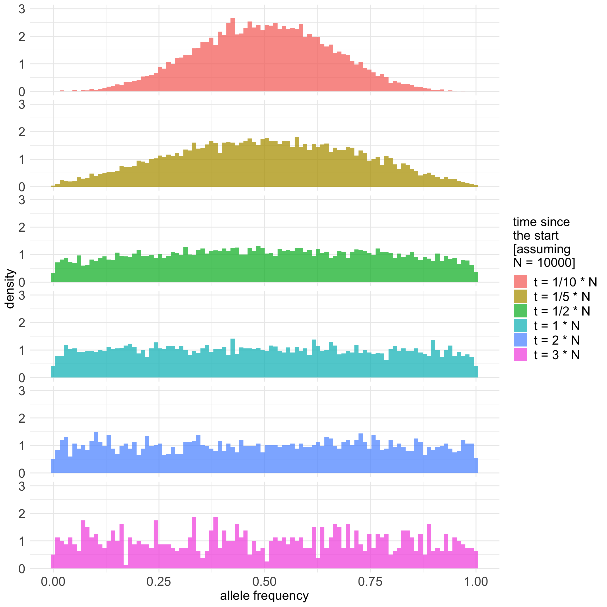
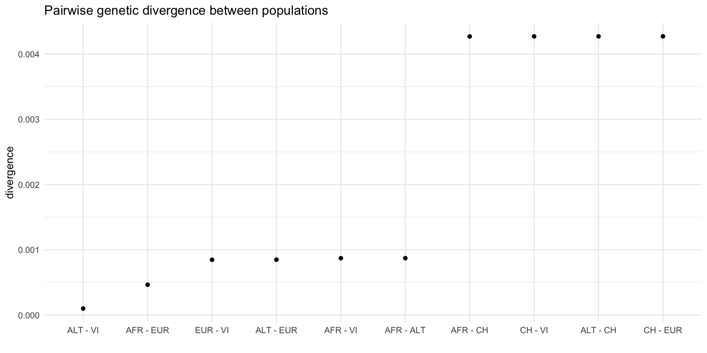

library(tidyverse)
library(parallel)
library(MASS)
set.seed(42)Simulations in population genetics
Martin Petr (mp@bodkan.net)
Many problems in population genetics cannot be solved by a mathematician, no matter how gifted. [It] is already clear that computer methods are very powerful. This is good. It […] permits people with limited mathematical knowledge to work on important problems […]
Why simulate genomic data?
- Exploring expected behavior of statistics
- Fitting model parameters (i.e. ABC)
- Ground truth for method development
Exploring expected behavior of statistics

Fitting model parameters (i.e. ABC)

Ground truth for testing and method development

What does it mean to simulate a genome?
How would you design an algorithm for a popgen simulation?
What minimum components are needed for the program to to be useful?
If we want to simulate population genetics
We need populations.
We need genetics.
A chromosome is…
…a linear sequence of nucleotides…
- a list of characters (A/G/C/T nucleotides)
- a list of 0 or 1 values (alternative/derived allele)
… which accumulates mutations every generation at a given mutation rate.
A population is…
A collection of individuals at a given point in time.
Each individual carrying two homologous chromosomes inherited from two parents in the previous generation.
Chromosomes recombine at a certain recombination rate.
Home-brewed single-locus simulations in R
Let’s make the algorithm even more minimal.
Some basic setup:
Single-locus simulation
N <- 500 # number of (haploid) individuals in the population
generations <- 500 # number of generations to run the simulation for
p_start <- 0.5 # initial allele frequency
# initialize an (empty) trajectory vector of allele frequencies
p_traj<- rep(NA, generations)
p_traj[1] <- p_start
# in each generation...
for (gen_i in 2:generations) {
p <- p_traj[gen_i - 1] # get the current frequency
# ... calculate the allele frequency in the next generation ...
p_next <- rbinom(1, N, p) / N
# ... and save it to the trajectory vector
p_traj[gen_i] <- p_next
}
p_traj\(N\) = 500, \(p_0 = 0.5\)
Let’s make it a function
Input: \(N\), \(p_0\) and the number of generations
Output: allele frequency trajectory vector
simulate <- function(N, p_start, generations) {
# initialize an (empty) trajectory vector of allele frequencies
p_traj<- rep(NA, generations)
p_traj[1] <- p_start
# in each generation...
for (gen_i in 2:generations) {
p <- p_traj[gen_i - 1] # get the current frequency
# ... calculate the allele frequency in the next generation ...
p_next <- rbinom(1, N, p) / N
# ... and save it to the trajectory vector
p_traj[gen_i] <- p_next
}
p_traj
}\(N\) = 500, \(p_0 = 0.5\) (20 replicates)
\(N\) = 1000, \(p_0 = 0.5\) (20 replicates)
\(N\) = 5000, \(p_0 = 0.5\) (20 replicates)
\(N\) = 10000, \(p_0 = 0.5\) (20 replicates)
\(N\) = 10000, \(p_0 = 0.5\) (20 replicates)

Expected allele frequency distribution
Code
p_start <- 0.5
N <- 10000
factors <- fractions(c(3, 2, 1, 1/2, 1/5, 1/10))
final_frequencies <- parallel::mclapply(
seq_along(factors), function(i) {
f <- factors[i]
t <- as.integer(N * f)
# get complete trajectories as a matrix (each column a single trajectory)
reps <- replicate(10000, simulate(N = N, p_start = p_start, generations = t))
# only keep the last slice of the matrix with the final frequencies
data.frame(
t = sprintf("t = %s * N", f),
freq = reps[t, ]
)
},
mc.cores = parallel::detectCores()
) %>% do.call(rbind, .)
final_frequencies$t <- fct_rev(fct_relevel(final_frequencies$t, sprintf("t = %s * N", factors)))
final_frequencies %>% .[.$freq > 0 & .$freq < 1, ] %>%
ggplot() +
geom_histogram(aes(freq, y = ..density.., fill = t), position = "identity", bins = 100, alpha = 0.75) +
labs(x = "allele frequency") +
coord_cartesian(ylim = c(0, 3)) +
facet_grid(t ~ .) +
guides(fill = guide_legend(sprintf("time since\nthe start\n[assuming\nN = %s]", N))) +
theme_minimal() +
theme(strip.text.y = element_blank(),
axis.title.x = element_text(size = 15),
axis.title.y = element_text(size = 15),
axis.text.x = element_text(size = 15),
axis.text.y = element_text(size = 15),
legend.title = element_text(size = 15),
legend.text = element_text(size = 15))
Bonus exercise #1
If you’re bored later, try adding selection to this model!
In each generation, weight the frequencies based on fitness of each of the tree genotypes.
If you need a hint, take a look here.
Why bother?

But now for something completely different.
Let’s do “real” simulations!
There are many pieces of simulation software
The most famous and widely used are SLiM and msprime.
They are both extremely powerful…
… but they require a lot of programming knowledge and quite a lot of code to write non-trivial simulations (without bugs).
SLiM
What is SLiM?
- Forward-time simulator
- It’s fully programmable!
- Massive library of functions for:
- Demographic events
- Various mating systems
- Selection, quantitative traits, …
- > 700 pages long manual!

SLiMgui – IDE for SLiM

Simple neutral simulation in SLiM
initialize() {
// create a neutral mutation type
initializeMutationType("m1", 0.5, "f", 0.0);
// initialize 1Mb segment
initializeGenomicElementType("g1", m1, 1.0);
initializeGenomicElement(g1, 0, 999999);
// set mutation rate and recombination rate of the segment
initializeMutationRate(1e-8);
initializeRecombinationRate(1e-8);
}
// create an ancestral population p1 of 10000 diploid individuals
1 early() { sim.addSubpop("p1", 10000); }
// in generation 1000, create two daughter populations p2 and p3
1000 early() {
sim.addSubpopSplit("p2", 5000, p1);
sim.addSubpopSplit("p3", 1000, p1);
}
// in generation 10000, stop the simulation and save 100 individuals
// from p2 and p3 to a VCF file
10000 late() {
p2_subset = sample(p2.individuals, 100);
p3_subset = sample(p3.individuals, 100);
c(p2_subset, p3_subset).genomes.outputVCF("/tmp/slim_output.vcf.gz");
sim.simulationFinished();
catn("DONE!");
}msprime
What is msprime?
What is msprime?
- A Python module for writing coalescent simulations
- Extremely fast (genome-scale, population-scale data)
- You must know Python fairly well to build complex models

Simple simulation using msprime
The following is basically the same model as the SLiM script earlier:
import msprime
demography = msprime.Demography()
demography.add_population(name="A", initial_size=10_000)
demography.add_population(name="B", initial_size=5_000)
demography.add_population(name="C", initial_size=1_000)
demography.add_population_split(time=1000, derived=["A", "B"], ancestral="C")
ts = msprime.sim_ancestry(
sequence_length=10e6,
recombination_rate=1e-8,
samples={"A": 100, "B": 100},
demography=demography
)source: link

www.slendr.net
Why a new package? – spatial simulations!

Why a new package?
Most researchers are not expert programmers
All but the most trivial simulations require lots of code
90%
of simulations are basically the same! create populations (splits and \(N_e\) changes)
specify if/how they should mix (rates and times)
save output (VCF, EIGENSTRAT)
Lot of code duplication across projects
Let’s get started
We will use slendr & tidyverse
First run this:
If you get a message about missing Python modules, run:
To check that everything is setup correctly, run:
slendr workflow:
building (complex) models
from simple components
Typical steps
- creating populations
- scheduling population splits
- programming \(N_e\) size changes
- encoding gene-flow events
- simulation sequence of a given size
- computing statistics from simulated outputs
Creating a population
A name, size and the time of appearance must be given:
Programming population splits
Splits are indicated by the parent = <pop> argument:
Scheduling resize events – resize()
Step size decrease:
Exponential increase:
Tidyverse-style pipe interface
Step size decrease:
Exponential increase:
More complex full model
pop1 <- population("pop1", N = 1000, time = 1)
pop2 <-
population("pop2", N = 1000, time = 300, parent = pop1) %>%
resize(N = 100, how = "step", time = 1000)
pop3 <-
population("pop3", N = 1000, time = 400, parent = pop2) %>%
resize(N = 2500, how = "step", time = 800)
pop4 <-
population("pop4", N = 1500, time = 500, parent = pop3) %>%
resize(N = 700, how = "exponential", time = 1200, end = 2000)
pop5 <-
population("pop5", N = 100, time = 600, parent = pop4) %>%
resize(N = 50, how = "step", time = 900) %>%
resize(N = 250, how = "step", time = 1200) %>%
resize(N = 1000, how = "exponential", time = 1600, end = 2200) %>%
resize(N = 400, how = "step", time = 2400)Remember: each object carries its history
slendr 'population' object
--------------------------
name: pop5
non-spatial population
stays until the end of the simulation
population history overview:
- time 600: split from pop4
- time 900: resize from 100 to 50 individuals
- time 1200: resize from 50 to 250 individuals
- time 1600-2200: exponential resize from 250 to 1000 individuals
- time 2400: resize from 1000 to 400 individualsLast step before simulation: compilation
Model visualization
Simulating data (finally…)
We have the compiled model, how do we simulate data?
slendr has two simulation engines already built-in:
- SLiM engine
- msprime engine
Take a model object and use the built-in simulation engine:
ts is a so-called “tree sequence”
The output of a slendr simulation is a tree sequence
What is a tree sequence?

- A record of full genetic ancestry of a set of samples
- An encoding of DNA sequence carried by those samples
- An efficient analysis framework
Why a tree sequence?
What we usually have

What we usually want
(As full as possible) a representation of our samples’ history:
Let’s get back to the model we defined earlier

Simulating a tree-sequence output
By default, msprime function automatically loads the tree-sequence that the simulation produced in the background:
If we type ts into an R console, we get…
… a tree-sequence content summary
╔═══════════════════════════╗
║TreeSequence ║
╠═══════════════╤═══════════╣
║Trees │ 141334║
╟───────────────┼───────────╢
║Sequence Length│ 100000000║
╟───────────────┼───────────╢
║Time Units │generations║
╟───────────────┼───────────╢
║Sample Nodes │ 9400║
╟───────────────┼───────────╢
║Total Size │ 24.7 MiB║
╚═══════════════╧═══════════╝
╔═══════════╤══════╤═════════╤════════════╗
║Table │Rows │Size │Has Metadata║
╠═══════════╪══════╪═════════╪════════════╣
║Edges │569170│ 17.4 MiB│ No║
╟───────────┼──────┼─────────┼────────────╢
║Individuals│ 4700│128.5 KiB│ No║
╟───────────┼──────┼─────────┼────────────╢
║Migrations │ 0│ 8 Bytes│ No║
╟───────────┼──────┼─────────┼────────────╢
║Mutations │ 0│ 16 Bytes│ No║
╟───────────┼──────┼─────────┼────────────╢
║Nodes │106580│ 2.8 MiB│ No║
╟───────────┼──────┼─────────┼────────────╢
║Populations│ 5│383 Bytes│ Yes║
╟───────────┼──────┼─────────┼────────────╢
║Provenances│ 1│ 3.9 KiB│ No║
╟───────────┼──────┼─────────┼────────────╢
║Sites │ 0│ 16 Bytes│ No║
╚═══════════╧══════╧═════════╧════════════╝What can we do with this?
R interface to tskit

This R interface links to Python methods implemented in tskit.
Here is the magic
Tree sequences make it possible to directly compute many quantities of interest without going via conversion to a genotype table/VCF!
How do we use this in practice?
To analyze tree sequences, we need to refer to “samples”
Extracting sample information
Each “sampled” individual in slendr has a symbolic name, a sampling time, and a population assignment:

Extracting sample information
Each “sampled” individual in slendr has a symbolic name, a sampling time, and a population assignment:
Analyzing tree sequences with slendr
Let’s say we have the following model and we simulate a tree sequence from it.
Example: allele frequency spectrum
But wait, we don’t have any mutations!
╔═══════════════════════════╗
║TreeSequence ║
╠═══════════════╤═══════════╣
║Trees │ 389699║
╟───────────────┼───────────╢
║Sequence Length│ 100000000║
╟───────────────┼───────────╢
║Time Units │generations║
╟───────────────┼───────────╢
║Sample Nodes │ 20000║
╟───────────────┼───────────╢
║Total Size │ 65.8 MiB║
╚═══════════════╧═══════════╝
╔═══════════╤═══════╤═════════╤════════════╗
║Table │Rows │Size │Has Metadata║
╠═══════════╪═══════╪═════════╪════════════╣
║Edges │1517216│ 46.3 MiB│ No║
╟───────────┼───────┼─────────┼────────────╢
║Individuals│ 10000│273.5 KiB│ No║
╟───────────┼───────┼─────────┼────────────╢
║Migrations │ 0│ 8 Bytes│ No║
╟───────────┼───────┼─────────┼────────────╢
║Mutations │ 0│ 16 Bytes│ No║
╟───────────┼───────┼─────────┼────────────╢
║Nodes │ 285922│ 7.6 MiB│ No║
╟───────────┼───────┼─────────┼────────────╢
║Populations│ 1│222 Bytes│ Yes║
╟───────────┼───────┼─────────┼────────────╢
║Provenances│ 1│ 1.3 KiB│ No║
╟───────────┼───────┼─────────┼────────────╢
║Sites │ 0│ 16 Bytes│ No║
╚═══════════╧═══════╧═════════╧════════════╝How can we compute statistics?
There is a duality between mutations and branch lengths in trees (more here).
But what if we want mutations?
Coalescent and mutation processes can be decoupled!
This means we can add mutations
after the simulation.
This allows efficient, massive simulations (especially with SLiM)
╔═══════════════════════════╗
║TreeSequence ║
╠═══════════════╤═══════════╣
║Trees │ 390860║
╟───────────────┼───────────╢
║Sequence Length│ 100000000║
╟───────────────┼───────────╢
║Time Units │generations║
╟───────────────┼───────────╢
║Sample Nodes │ 20000║
╟───────────────┼───────────╢
║Total Size │ 90.8 MiB║
╚═══════════════╧═══════════╝
╔═══════════╤═══════╤═════════╤════════════╗
║Table │Rows │Size │Has Metadata║
╠═══════════╪═══════╪═════════╪════════════╣
║Edges │1521502│ 46.4 MiB│ No║
╟───────────┼───────┼─────────┼────────────╢
║Individuals│ 10000│273.5 KiB│ No║
╟───────────┼───────┼─────────┼────────────╢
║Migrations │ 0│ 8 Bytes│ No║
╟───────────┼───────┼─────────┼────────────╢
║Mutations │ 419734│ 14.8 MiB│ No║
╟───────────┼───────┼─────────┼────────────╢
║Nodes │ 286611│ 7.7 MiB│ No║
╟───────────┼───────┼─────────┼────────────╢
║Populations│ 1│222 Bytes│ Yes║
╟───────────┼───────┼─────────┼────────────╢
║Provenances│ 2│ 2.1 KiB│ No║
╟───────────┼───────┼─────────┼────────────╢
║Sites │ 418855│ 10.0 MiB│ No║
╚═══════════╧═══════╧═════════╧════════════╝Example: allele frequency spectrum
What we have learned so far
- creating populations –
populations() - compiling models –
compile_model() - simulating tree sequences –
msprime() - extracting samples –
ts_samples() - computing AFS –
ts_afs()
Let’s put this to use!
Exercise #1
Exercise #1
Collaborator Hestu gave you AFS computed from 20 individuals of a sub-species of the bushy-tailed squirrel discovered in the Forest of Spirits in the land of Hyrule:
c(2520, 1449, 855, 622, 530, 446, 365, 334, 349, 244, 264, 218,
133, 173, 159, 142, 167, 129, 125, 143)Fossil evidence is consistent with constant size of the population over 100,000 generations of its history. An Oracle you met in the Temple of Time said that the true squirrel \(N_e\) has been between 1000 and 30000.
Use slendr to simulate history of this species. Use this to guess the likely value of squirrel’s \(N_e\) given the observed AFS.
Exercise #1 – hints
Write a function that gets \(N_e\) as input and returns the AFS.
Find the \(N_e\) value that will give the closest AFS to the one you got from Hestu. Use whatever method you’re comfortable with based on your programming experience:
i ) Plot simulated AFS for different \(N_e\) with the AFS and just eye-ball \(N_e\) value that looks correct.
ii ) Simulate AFS across a grid of \(N_e\) values and find the closest matching one (maybe use mean-squared error?)
iii ) Run a mini-Approximate Bayesian Computation, using the Oracle’s range of [10000, 30000] as a uniform prior.
Exercise #1 – simulations on a grid
solution
Exercise #1 – ABC inference
solution
Exercise #2
Tectonic shifts caused by activated Sheikah towers caused speciation of the squirrels. Unfortunately, their future is clouded by the shadow cast over Hyrule by Calamity Ganon.
Can you help the Oracle predict the future shape of the AFS of the squirrels, assuming starting \(N_e\) = 6543? Species #1 will remain constant, species #2 will expand 3X, species #3 will get 3X smaller.
Exercise #2 – solution
link
What else can slendr do?
Gene flow events
Gene flow is programmed using the gene_flow() function:
Multiple gene-flow events can be gathered in a list:
gene_flow() checks admixture events for consistency
Let’s build another toy model
Code
o <- population("o", time = 1, N = 100)
c <- population("c", time = 2500, N = 500, parent = o)
a <- population("a", time = 3000, N = 2000, parent = c)
b <- population("b", time = 3500, N = 4000, parent = a)
x1 <- population("x1", time = 3800, N = 8000, parent = c)
x2 <- population("x2", time = 4000, N = 10000, parent = x1)
gf <- gene_flow(from = b, to = x1, start = 5500, end = 6000, rate = 0.3)
model <- compile_model(
populations = list(a, b, x1, x2, c, o), gene_flow = gf,
generation_time = 1, simulation_length = 7000
)
ts <- msprime(model, sequence_length = 100e6, recombination_rate = 1e-8) %>%
ts_mutate(mutation_rate = 1e-8)
plot_model(model, proportions = TRUE)Diversity – ts_diversity()
Extract a list of lists of individuals’ names for each population:
Exercise #3
Program the following model in slendr

Parameter values
“CH” outgroup at time 7 Mya (\(N_e\) = 7k)
“AFR” splitting from “CH” at 6 Mya (\(N_e\) = 10k)
“ALT” splitting from “AFR” at 700 kya (\(N_e\) = 500)
“VI” splitting from “ALT” at 120 kya (\(N_e\) = 1k)
“EUR” splitting from “AFR” at 70 kya (\(N_e\) = 5k)
gene flow from “VI” to “EUR” at 3% over 50-40 kya
Then simulate 100Mb sequence with msprime(), using recombination rate 1e-8 per bp per generation.
Exercise #3 – solution
link
Exercise #4
Diversity and divergence
Use ts_diversity() to compute diversity in each simulated population (CH, AFR, …).
Does the result correspond to what you would expect based on the demographic history?
What about pairwise genetic divergence between all populations (ts_divergence())? Do your results recapitulate phylogenetic relationships?

Exercise #4 – solution (diversity)
Code
# A tibble: 5 × 2
set diversity
<chr> <dbl>
1 ALT 0.0000199
2 VI 0.0000365
3 CH 0.000276
4 EUR 0.000365
5 AFR 0.000391 Exercise #4 – solution (divergence)
# A tibble: 10 × 3
x y divergence
<chr> <chr> <dbl>
1 ALT VI 0.000101
2 AFR EUR 0.000448
3 EUR VI 0.000850
4 ALT EUR 0.000851
5 AFR VI 0.000865
6 AFR ALT 0.000866
7 CH VI 0.00427
8 CH EUR 0.00427
9 AFR CH 0.00427
10 ALT CH 0.00427 Sampling “ancient DNA” time-series
By default, slendr records every individual living at the end of the simulation. Sampling can be also scheduled explicitly:
Computing \(f_4\) statistic – ts_f4()

Having simulated data from this model, can we detect gene flow from b into x1?
Computing \(f_4\) statistic – ts_f4()
Simulate tree sequence, add mutations on it:
Computing \(f_4\) statistic for all x individuals
# extract information about samples from populations x1 and x2
x_inds <- ts_samples(ts) %>% filter(pop %in% c("x1", "x2"))
# create a vector of individual's names
# (used as input in ts_<...>() functions
x_names <- x_inds$name
# iterate over all sample names, compute
# f4(X, C; B, O)
f4_result<- map_dfr(
x_names,
function(w) ts_f4(ts, W = w, X = "c_1", Y = "b_1" , Z = "o_1")
)
# add the f4 value as a column to the sample information table
x_inds$f4 <- f4_result$f4Computing \(f_4\) statistic for all x individuals
Code
ggplot(x_inds) +
geom_rect(aes(xmin = 5500, xmax = 6000, ymin = -Inf, ymax = Inf), alpha = 0.5, fill = "gray") +
geom_jitter(aes(time, f4, color = pop)) +
geom_line(data = . %>% group_by(pop, time) %>% summarise(f4 = mean(f4)),
aes(time, f4, color = pop), size = 2) +
geom_hline(yintercept = 0, linetype = 2, size = 1) +
theme_minimal()Exercise #5
Neanderthal ancestry trajectory
Take your model of Neanderthal introgression
Implement temporal sampling:
- one “European” every 1000 yrs between 40 kya and today
- “Altai” (70 ky old) and “Vindija” individuals (40 ky old)
- Compute \(f_4\)-ratio statistic using:
- Plot the estimated trajectory of Neanderthal ancestry in Europe over time.
Exercise #5 – solution
solution
Tree-sequence simplification
Sometimes a tree sequence is too big

Meet ts_simplify()
these samples will be retained.
Extracting a tree #1734
Code
# this needs another R package
# simply using the ape package and running `plot(tree)` will also work
library(ggtree)
nodes <- ts_nodes(tree) %>%
as_tibble %>%
dplyr::select(node = phylo_id, pop)
p_tree <- ggtree(tree) %<+% nodes +
geom_tiplab(aes(color = pop, fill = pop)) +
guides(color = "none") +
scale_x_continuous(limits = c(-7e6, 900e3)) +
geom_vline(xintercept = -700e3, linetype = 2, color = "red")
revts(p_tree)Extracting a tree #1
Code
# this needs another R package
# simply using the ape package and running `plot(tree)` will also work
library(ggtree)
nodes <- ts_nodes(tree) %>%
as_tibble %>%
dplyr::select(node = phylo_id, pop)
p_tree <- ggtree(tree) %<+% nodes +
geom_tiplab(aes(color = pop, fill = pop)) +
guides(color = "none") +
scale_x_continuous(limits = c(-7e6, 900e3)) +
geom_vline(xintercept = -700e3, linetype = 2, color = "red")
revts(p_tree)Bonus exercise #2
Try to implement something relevant for your own work
- Program a demographic model for your species of interest
- Choose a statistic whose value “true value” you know from the literature (divergence? diversity? f4-statistic? ancestry proportion?)
- Try to replicate the statistic in a slendr simulation using some of its
ts_<...>()tree-sequence functions!
Bonus exercise #3
Try to implement your own D-statistic
You can extract data from a tree sequence in the form of a genotype table using the function ts_genotypes().
This function returns a simple R data frame:
- each column for an individual
- each row for a site
- each cell giving the number of derived alleles in that individual at that site
Use the genotype table to compute your own ABBA/BABA statistic on the Neanderthal model data and check if you can recover the same signal as you get from ts_f4().